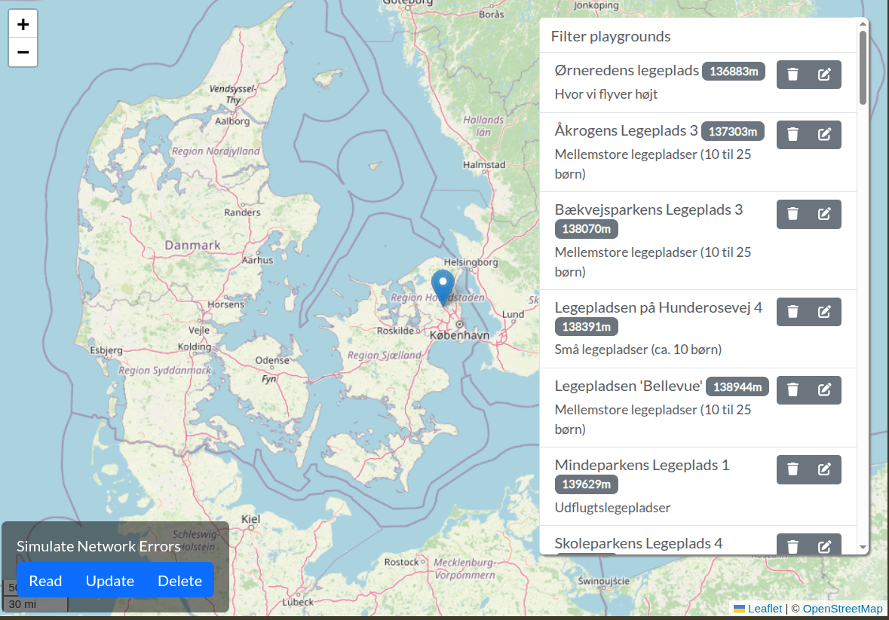

Not happy with the result of the previous exercise? Go to the the labs/state-management/exercise-3 directory
Let's simplify our PlaygroundStore 🥳
Introduce three rxResource properties into your store. You can expose your properties as signals, or you can expose the entire resource as a Resource<Playground[]> . Look at the previous slide, if you need inspiration.
You should use computed to sort the playgrounds in the app component,
Your component can now directly use the signals from the store! No more toSignal()!
How would you go about displaying these three errors?🤔
